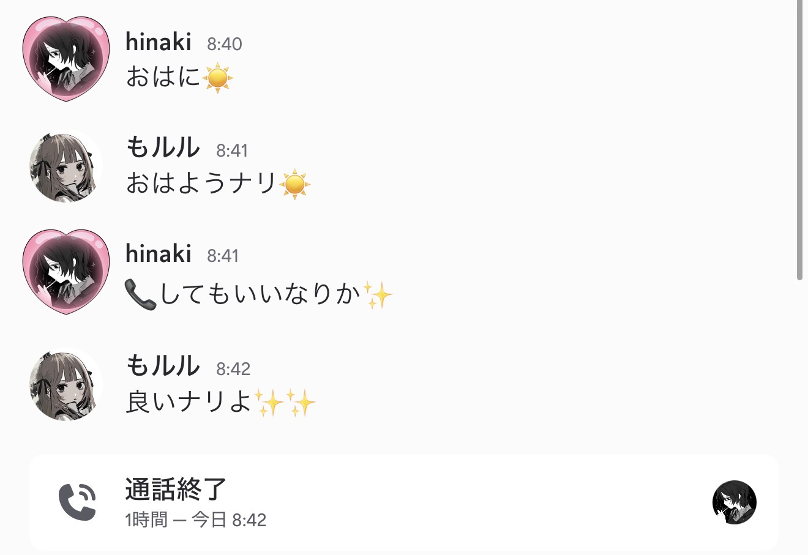

朝起きて、数秒後。
まず最初にすることは、叔父（以下、もルル）へDiscordで「おはに」と送ることだ。
数秒後、もルルのアイコンが緑色のスマホマークに変わり、「おはようナリ」と返ってくる。
さらに私の追伸で、「電話していいなりか」。
「いいなりよ」と返信が来る。
私の休日は、朝一番のもルルとの通話から始まる。
まずは「おはようナリ」と挨拶を交わし、「ヤニねこ見たなりか？」なんて軽く雑談をする。
……とはいえ、二日に一回は会っている。
当然、会話のネタはすぐ尽きる。
でも電話は切らない。
しばらく沈黙が続き、その間にもルルの朝食（昼食？）を食べる音だけが聞こえる。
そして最後には、この真夏の灼熱地獄にもかかわらず熱いお茶をすする音。
私はそれを「キチガイお茶」と呼んでいる。
そんな平和な時間をぶち壊すように届く、一通のLINE。
「今から行くね」
和歌山に単身赴任している父からだ。
世界一いらない通知である。
父が家に着くと同時にもルルとの電話を切り、二人でモーニングへ向かう。
そして始まる父の愚痴タイム。
毎回、初めて話すかのような勢いで、同じ話を聞く。
私は相づちのプロになった。
帰宅すると、メンタルがすっかり削られ、そのまましばらく寝たきりになる。
回復したら、またもルルと合流。
一緒にいるといっても、特別なことをするわけではない。
ヤニねこを見たり、一服したり、コーディングをしたり、記事を書いたり。
お互い好きなことをしながら、たまに爆笑する。
そんな時間が、案外いちばん癒やされる。
創作のネタは、寝ているときか、眠る直前によく思いつく。
だから、思いついたら忘れないうちにメモ…ができる時とできない時があり、後者は忘れる。
もルルと別れたあとは、またコーディングをしたり、本を読んだり、絵を描いたり、『アッシュ・ジャーニー』を書いたり。ギャルゲーも好きだ。
気づけば時計は夜の7時半から8時半。
驚くほど早く眠くなるので、そのまま寝る。
これが、私の「本当の休日」だ。
